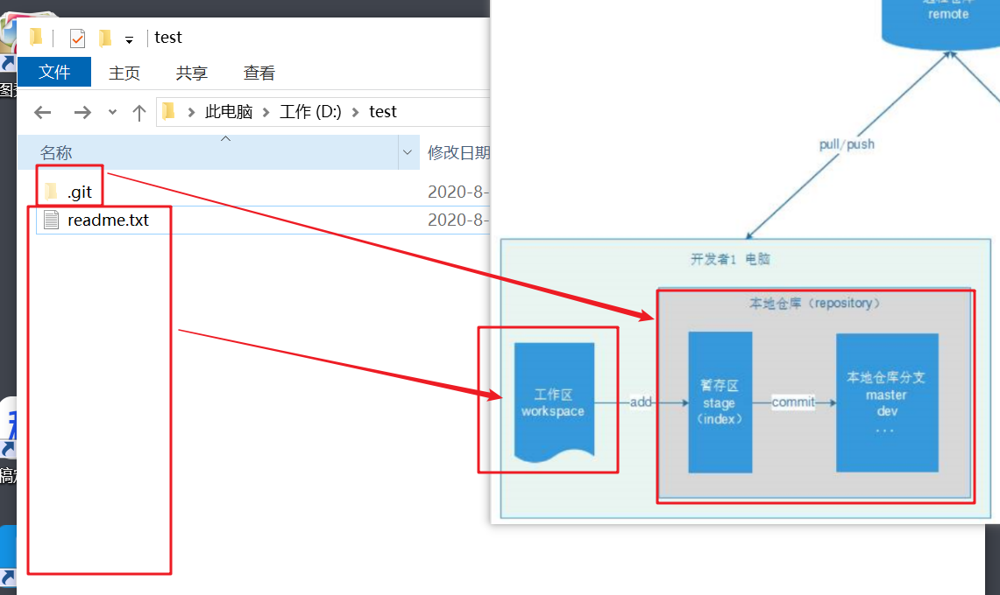

学习目标
1、了解Git历史发展
2、掌握Git安装
3、掌握Git的基本使用
4、掌握分支管理
5、了解git与svn的区别
6、掌握git的工作流程
7、掌握idea操作git的
8、掌握git常用命令
9、掌握使用Git远程仓库
第一部分：Git的简介与安装
1. 版本控制是什么？
目标：掌握和了解Git是什么，在实际应用中处于什么角色。
需求
在项目开发中，团队协作管理代码和文件是每天必须要做的事情。大家一定会碰到如下几个场景和问题？
1：协同修改，多人并行开发修改服务器的文件
2：数据备份
3：版本管理，权限控制
4：如果文件和工程误删了还能找回来吗？
5：分支管理 1.0 2.0
6：遇到了文件冲突如何解决？
7：如何把一些我临时保存的文件不要提交?Svn版本控制软件:

Git版本控制器软件:

2. Git的由来和发展史
概述
同生活中的许多伟大事件一样，Git 诞生于一个极富纷争大举创新的年代。
Linux 内核开源项目有着为数众广的参与者。绝大多数的 Linux 内核维护工作都花在了提交补丁和保存归档的繁琐事务上（1991－2002 年间）。到 2002 年，Linux 系统已经发展了十年了，代码库之大让 Linus 很难继续通过手工方式管理了，于是整个项目组开始启用分布式版本控制系统 BitKeeper 来管理和维护代码。
到 2005 年的时候，开发 BitKeeper 的商业公司同 Linux 内核开源社区的合作关系结束，他们收回了免费使用 BitKeeper 的权力。这就迫使 Linux 开源社区（特别是 Linux 的缔造者 Linus Torvalds ）不得不吸取教训，只有开发一套属于自己的版本控制系统才不至于重蹈覆辙。他们对新的系统订了若干目标：
• 速度快
• 简单的设计
• 对非线性开发模式的强力支持（允许上千个并行开发的分支）
• 完全分布式
• 有能力高效管理类似 Linux 内核一样的超大规模项目（速度和数据量） Linus花了两周时间自己用C写了一个分布式版本控制系统，这就是Git！一个月之内，Linux系统的源码已经由Git管理了！牛是怎么定义的呢？大家可以体会一下。
Git迅速成为最流行的分布式版本控制系统，尤其是2008年，GitHub网站（基友网站）上线了，它为开源项目免费提供Git存储，无数开源项目开始迁移至GitHub，包括jQuery，PHP，Ruby等等。
历史就是这么偶然，如果不是当年BitMover公司威胁Linux社区，可能现在我们就没有免费而超级好用的Git了。

3. Git与Svn区别
集中式版本控制（Svn）
==SVN是集中式版本控制系统==，版本库是集中放在中央服务器的，而干活的时候，用的都是自己的电脑，所以首先要从中央服务器哪里得到最新的版本，然后干活，干完后，需要把自己做完的活推送到中央服务器。集中式版本控制系统是必须联网才能工作，如果在局域网还可以，带宽够大，速度够快，如果在互联网下，如果网速慢的话，就郁闷了。
下图就是标准的集中式版本控制工具管理方式:

集中管理方式在一定程度上看到其他开发人员在干什么，而管理员也可以很轻松掌握每个人的开发权限。
但是相较于其优点而言，集中式版本控制工具缺点很明显：
服务器单点故障，容错性差分布式版本控制（Git）
==Git是分布式版本控制系统==，那么它可以没有中央服务器的，每个人的电脑就是一个完整的版本库，这样，工作的时候就不需要联网了，因为版本都是在自己的电脑上。既然每个人的电脑都有一个完整的版本库，那多个人如何协作呢？比如说自己在电脑上改了文件A，其他人也在电脑上改了文件A，这时，你们俩之间只需把各自的修改推送给对方，就可以互相看到对方的修改了。
下图就是分布式版本控制工具管理方式：

小结
SVN与git到区别
- svn是集中式的版本控制，版本库放在中央仓库。git是分布式的版本控制，版本库放在用户自己的电脑与保存远程仓库中。
- svn不支持离线工作，因为版本库全部都放在是中央服务器。如果中央服务器挂了。那么版本全部丢失。
- git支持离线工作。版本都放用户自己电脑上完成。—- 分布式的版本控制。
- svn是项目对仓库（一个仓库可以存放多个项目），==git是仓库对仓库（一个仓库只能存放一个项目）==。
4. GitHub和码云
目标：了解github与码云代码托管中心
比较出名的代码托管中心: GitHub 和 码云
什么是GitHub？
确切的说 GitHub 是一家公司，位于旧金山，由 Chris Wanstrath, PJ Hyett 与 Tom Preston-Werner 三位开发者在2008年4月创办。这是它的 Logo：

2008年4月10日，GitHub正式成立，地址：How people build software · GitHub ，主要提供基于git的版本托管服务。一经上线，它的发展速度惊为天人，截止目前，GitHub 已经发展成全球最大的开源社区。所以 Git 只是 GitHub 上用来管理项目的一个工具而已，GitHub 的功能可远不止于此！微软76亿美金收购Github
什么是码云？
我们使用GitHub的时候，会感觉比较慢，为什么？ 原因就是GitHub在遥远的美国，由于各种原因造成访问速度不怎么好，所以国内的git服务提供商，码云就起来了。

4.3 产品功能对比
| 功能 | 码云 Gitee | GitHub |
|---|---|---|
| 代码托管，支持 Git/SVN | √ | √ |
| 开源项目、代码片段 | √ | √ |
| Issue | √ | √ |
| Wiki | √ | √ |
| Fork + Pull Request | √ | √ |
| 组织 | √ | √ |
| 私有仓库免费协作人数 | 5 人 | 3 人 |
| 保护分支 | 免费 | 收费 |
| 在线 IDE（Gitee IDE） | √ | 不支持 |
| 仓库自动备份 | √ | 不支持 |
| 禁止 Git 强推 | √ | 不支持 |
| 支持仓库访问 IP 限制 | √ | 不支持 |
| 企业级研发协作 | 5 人免费 | 收费 |
| 敏捷开发管理 | √ | |
| 任务看板（可灵活定义） | √ | |
| 支持多级任务、关联任务 | √ | |
| 自动代码质量分析 | √ | |
| 快捷生成工作周报 | √ | |
| 代码克隆检测 | √ | |
| 自动生成 JavaDoc/PHPDoc | √ | |
| 多语言 README 自动渲染 | √ | |
| 支持微信/钉钉通知 | √ |
4.4 协作开发流程

5. Git安装：客户端和服务端
前提
- 现在已经明白Git是一款版本控制工具。和Svn一样分为客户端和服务端。
- 服务端用来创建仓库保存文件的版本信息。客户端用来控制服务端的文件的维护操作。
5.1 下载

安装教程：安装Git服务端
这是 windows 版本的 git 服务器；所以必须安装；安装说明详情见“资料”下的《Windows 系统安装 Git 2.14.1.docx》
5.2 安装
双击安装：


一路“Next”使用默认选项即可。

安装完成后，可以在任意文件夹点右键，看到如下菜单：

输入git命令即可看到帮助信息

5.3 全局账户配置
- 配置全局账户作用： 等会你提交代码的时候需要记录提交人信息,提交的信息就是从全局账户信息中提取。
配置签名: 用户名和邮箱(提交的用户名与邮箱)
git config –global user.name “nameVal”
git config –global user.email “emailVal”
git config --global user.name "ztl" git config --global user.email "ztl@itcast.cn"
细节：
全局的用户信息放在：系统盘的--用户目录--用户名目录-- .gitconfig文件中 [C:\Users\主机名目录\.gitconfig]
- ==配置全局参数的作用是提交代码的时候需要记录用户的信息。==
小结
配置全局用户信息的作用？
- 提交代码的时候就是使用了全局用户信息作为提交人信息
第二部分：Git命令入门到精通（了解,操作本地仓库）
1.Git命令：创建本地版本库
目标：知道什么是版本库，并且创建它
什么是版本库呢？版本库又名仓库，英文名repository，你可以简单理解成一个目录，这个目录里面的所有文件都可以被Git管理起来，每个文件的修改、删除，Git都能跟踪，以便任何时刻都可以追踪历史，或者在将来某个时刻可以“还原”。由于git是分布式版本管理工具，所以git在不需要联网的情况下也具有完整的版本管理能力。
创建一个版本库非常简单:
首先，选择一个合适的地方，创建一个空目录。在创建了一个hello目录：
使用git init命令把这个目录变成Git可以管理的仓库：

命令输入后，你已经创建了一个空的Git仓库。此时你会在hello目录下发现一个隐藏目录.git


这个目录是Git来跟踪管理版本库的，没事千万不要手动修改这个目录里面的文件，不然改乱了，就把Git仓库给破坏了。如果你没有看到.git目录，那是因为这个目录默认是隐藏的，用ls -ah命令就可以看见。
此处的hello目录就是我们的：工作区 (work tree)**，存放所有当前文档。此目录下的文件才会被Git管理，hello中的.git目录就是我们的：本地仓库**，管理并保存所有的文档变化及历史状态。
版本库核心文件的解释
| 目录 | 描述 |
|---|---|
| config | 该文件主要记录针对该项目的一些配置信息，例如是否以bare方式初始化、remote的信息等，通过git remote add命令增加的远程分支的信息就保存在这里； |
| objects | Git中的文件和一些操作都会以git对象来保存，git对象分为BLOB、tree和commit三种类型，例如git commit便是git中的commit对象，而各个版本之间是通过版本树来组织的，比如当前的HEAD会指向某个commit对象，而该commit对象又会指向几个BLOB对象或者tree对象。 |
| HEAD | 该文件指明了git branch（即当前分支）的结果，比如当前分支是master，则该文件就会指向master，但是并不是存储一个master字符串，而是分支在refs中的表示，例如ref: refs/heads/master |
| index | 该文件保存了暂存区域的信息。该文件某种程度就是缓冲区（staging area），内容包括它指向的文件的时间戳、文件名、sha1值等； |
| Refs | 该文件夹存储指向数据（分支）的提交对象的指针。 |
小结
创建版本库的命令步骤是？
- git init
2.Git命令：添加文件并提交
目标：Git是如何在仓库中添加文件并提交到本地仓库?
版本控制系统，其目的就是跟踪文本文件的改动，例如我们开发时编写的.java、.properties本质都是文本文件。文件中每一个字符的变化都会被跟踪并且管理。

在工作区中新建一个readme文件

接下来，我们使用 git add 命令，将文件添加到暂存区

没有任何的反应，证明没有问题。
使用 git commit 命令，将暂存区文件提交到本地仓库（分支master）

命令解释:
git commit 命令可以将暂存区的文件提交到版本库。
-m 参数，是本次提交的说明信息，用来注释本次提交做了些说明事情。
**总结: **
将一个文件添加到本地仓库，分两步：
- 提交暂存区 ： git add 文件名
- 提交到本地仓库： git commit -m ‘备注信息’
疑问
git版本控制工具为什么要设置一个缓存区呢？直接提交到本地库有什么弊端吗？
3.Git概念：工作区、暂存区、版本库
目标：理解Git 工作区、暂存区和版本库概念
工作区：
工作区就是你在电脑里能看到的目录。比如我们刚刚创建的hello目录：

==其中除了 .git目录 ，其它就是我们需要被管理的文件。==
版本库及暂存区：
- 工作区有一个隐藏目录.git，这个不算工作区，而是Git的版本库。
- Git的版本库里存了很多东西，其中最重要的就是称为stage（或者叫index）的暂存区，还有Git为我们自动创建的第一个分支master，以及指向master的一个指针叫HEAD。

前面讲了我们把文件往Git版本库里添加的时候，是分两步执行的：
第一步是用git add把文件添加进去，实际上就是把文件修改添加到暂存区；
第二步是用git commit提交更改，实际上就是把暂存区的所有内容提交到当前分支。因为我们创建Git版本库时，Git自动为我们创建了唯一一个master分支，所以，现在，git commit就是往master分支上提交更改。
为什么Git会设计暂存区？
Git暂存区的目的在于分段提交！怎么理解？
Git的add是可以选择文件的，==commit是不能选择文件的！==Git的commit（提交操作）是原子操作，意味着一次提交会把所有文件全部提交，如果失败则一个文件都不提交。==如果Git没有暂存区，工作区修改的代码 就只能一次全部提交==，而在实际开发过程中，我们在开发过程中可能会出现突发的Bug需要修复，这时我们只需要选择提交修改好的Bug的文件即可，从而实现分段提交的效果。
4.Git命令：比较差异、状态、日志
被版本库管理的文件不可避免的要发生修改，此时只需要直接对文件修改即可。修改完毕后需要将文件的修改提交到版本库。
我们对readme.txt文件进行修改，添加一行数据：

比较差异

用git diff HEAD readme.txt命令可以查看工作区和版本库里面最新版本的区别：

可以发现，与版本库中的 readme.txt相比，我们多了一行文本！
查看修改状态
我们如果不确定自己的哪些文件被修改了，可以使用git status命令，查看当前工作区的状态： 
可以清楚的看到：changes not staged for commit（修改没有被缓存，需要使用git add来进行添加操作）,我们使用git add 命令，添加到暂存区：

再次查看状态：

这次提示： changes to be commited （修改需要被提交），我们使用git commit 进行提交
再次查看状态：

提示说：工作区很干净，没有任何需要提交，搞定！
再次修改readme.txt 新增内容: Test version control. 提交到版本库

查看日志
git log 整体展示，不直观，如果要翻页，一直按enter键进行翻页，按CTRL+C退出

如果嫌输出信息太多，看得眼花缭乱的，可以试试加上--pretty=oneline(一行显示)参数：

可以发现，目前为止，我们已经在本地仓库中提交了3次，也就是说有3个不同版本。其中，最近的这个版本有一个标示：HEAD ，这就是标记当前分支的当前版本所在位置。本例当中，当前版本即 test version control这次提交。
另外，在log中，每一个版本的前面，都有一长串随即数字：5bc7781319b…192728 ，这是每次提交的commit id ，这是通过SHA1算法得到的值，Git通过这个唯一的id来区分每次提交。
美化的缩小版
git log --oneline
小结
比较差异、查看修改状态、查看日志的命令是什么？
- git diff head 文件名
- git status
- git log --oneline5.Git命令：版本回退（切换版本）
目标：使用git命令git reset 找回文件回退到历史版本
现在，假设我们要回到上一级版本，该如何操作呢？
首先，Git通过HEAD来判断当前所在的版本位置。那么上一个版本，就用HEAD^标示，上上一个版本就是HEAD^^，当然往上100个版本写100个^比较容易数不过来，所以写成HEAD~100。
如果要从 “test version control” 回退到 “modify readme file” ，我们可以使用 git reset 命令。
版本回退的命令格式： git reset –hard 版本号

查看所有关联日志
我们可以通过git reflog命令，看到以前的每次执行动作:

其中红框内的部分，就是我们第三次提交的日志信息。前面的Obd575f就是第三次提交的 commit id 的前几位数字。
回退到某个版本
语法: git reset –hard ‘版本号’
git reset --hard 0712188提示说：HEAD 现在已经被设置到 0712188 的版本，即 modify readme file。
我们查看readme.txt，果然，版本已经回退了，最新添加的数据“Test version control”已经没了。
此时再次查看日志，发现只剩下2次提交信息了，第三次提交的信息已经没了:
假如此时我后悔了，还想回到第3次提交的版本，怎么办?
查看日志，得到版本号，回退指定版本：
 查看文件：(数据又回来了！)
查看文件：(数据又回来了！)
总结：
git log 与 git reflog的区别
一旦版本回退git log命令无法查看之后的日志操作
git reflog 是可以查看每次一次的操作的版本信息
回退到指定的版本使用哪个命令？
git reset –hard 版本号
6.Git命令：撤销修改
目标：掌握文件修改的撤销
撤销工作区修改
现在我们在readme.txt中添加一行数据:

- 在你提交前，你突然发现这个修改是有问题的，你打算恢复到原来的样子。怎么办？
- 如果修改的并不多，我们完全可以手动恢复到原始状态。但是如果改动比较大，手动处理就很容易有遗漏，而且很麻烦。怎么办？
查看状态:

Git提示我们，现在文件已经修改，等待被staged（暂存）。我们有两个选择：
- 可以使用git add 来添加到暂存区，接着去提交文件。
- 可以使git checkout –
来撤销修改。
所以，这里我们选择第二种方案：(–是可以省略不写的)

再次查看状态：

工作区是干净的！查看文件：

修改已经被撤销了！
撤销staged（暂存区）修改
- 刚才的案例中，我们修改了数据，并没有add带暂存区，处理起来还算简单。
- 如果我们已经把数据add 到了暂存区，又该如何处理呢？我们首先添加一行数据到readme.txt

- 并且添加到staged（暂存区），然后查看状态:

- 有一个修改等待被提交，并且有一行提示:

- 可以使用 git reset HEAD
来撤销缓存修改。
我们前面说过，git reset 命令可以进行版本回退，此处reset 指定的是HEAD ，而不是其他版本，因此就有撤销缓存修改的作用：
git reset HEAD readme.txt (撤回暂存去内容)
查看状态：

发现文件的修改被撤回到了工作区，尚未添加到staged（暂存区），我们再次执行git checkout –

工作区干净了！查看文件：

文件也恢复了原来的状态，整个世界都清净了！

小结：
撤销的情况有几种，每种的方案是如何？
- 情况1： 修改文件还没有提交到暂存区的
git checkout 文件名 - 情况2： 修改文件已经提交到了暂存区
撤销暂存区内容 : git reset head 文件名- 撤销工作区内容: git checkout 文件名
7.Git：忽略文件
问题
往往在开发的过程中，特别是在多人协作的场景下，可能需要把一些无用的文件不需要提交。GIT是如何来做的的呢？
图解

在当前工作区创建忽略文件：.gitignore
target*.iml.ideagitignore 语法规则:
空行或是以 # 开头的行即 注释行，将会被忽略。
示例如下：
# 忽略所有 .a 文件
*.a# 递归忽略 build/ 文件夹下的所有文件
build# 忽略 /doc/notes.txt,不包括 doc/server/arch.txt
doc/*.txt# 忽略所有的 .pdf 文件 在 doc/ directory 下的
doc/**/*.pdf
第三部分：Git的远程仓库【重点】
1.远程仓库：注册、创建仓库、推送
问题
之前我们讲的文件版本控制都是在本机的本地仓库中进行操作，如何进行团队协作开发，怎么把我们本地仓库的代码共享出来供团队的其他开发员下载使用呢？
没错就是：远程仓库。
介绍
到目前为止，我们已经学会了如何在本机利用git进行文件版本管理，但是如果要想进行多人协作，我们就必须使用远程仓库。将本地仓库的数据同步到远程仓库，实现多人协作开发。
目前比较热门的代码托管社区：GitHub，网址：https://gtihub.com ,提供了免费的远程git仓库功能。不过网速不是特别流畅。
在国内，有很多的公司使用oschina提供的git服务：码云, https://gitee.com。
也可以自己搭建：gitlab。

github
-

创建远程仓库


- 详细介绍远程仓库

码云
-

创建远程仓库
在页面右侧，选择创建新的仓库

填写仓库信息:


仓库创建完毕，可以看到，如果我们要与远程仓库同步，这里支持两种不同的通信协议，ssh和http。当我们选中一种协议后，后面会出现对应的远程仓库地址。

关联远程仓库

操作步骤
添加或删除关联远程仓库
git remote add origin url # 为当前本地仓库添加关联的远程仓库git remote rm origin # 从当前本地仓库中删除关联的远程仓库origin: 为远程仓库起个别名
url: 远程url
添加本地仓库和远程仓库关联-https连接 (第一种方式)


# 执行此命令必须要进入该仓库对应的工作区# githubgit remote add origin https://github.com/lixiaohua1/gitdemo.git# 码云git remote add origin2 https://gitee.com/leesiuwah/gitdemo.git注: 初次关联使用提交代码的时候需要填写，账号和密码信息(为github 或 码云 的登录用户名与密码)。用户名：ztl@itcast.cn 密码: xxxxx
【稍后再使用】: 添加本地仓库和远程仓库关联-ssh连接（第二种方式: 免密)
同步本地仓库到远程仓库的命令：
# 同步本地仓库到远程仓库# github git push -u origin master # 码云 git push -u origin2 master
注：origin 可以理解为远程仓库的别名，master 主分支。
小结
如何设置保存远程仓库地址(设置一个变量名保存)
- git remote add 变量名 远程仓库的地址
推送到远程仓库的命令?
- git push -u 变量名 分支名称（master）
2.远程仓库：克隆远程仓库到本机

操作命令
# 克隆远程仓库到本机# git clone ssh/https # githubgit clone https://github.com/lixiaohua1/gitdemo.git# 码云git clone https://gitee.com/leesiuwah/gitdemo.git
注意：新克隆下来的远程仓库访问名称默认为 origin
3.远程仓库：同步远程仓库到本地仓库
目标：如何同步远程仓库的代码到本地仓库到呢？

张三修改代码,要提交本地仓库中

把本地仓库代码推送到gethub或者gitee远程仓库中

==注意： 克隆下来的代码默认有一个变量名称为origin，origin就保存仓库地址信息==
李四就可以拉取下来
# 更新远程仓库到本地仓库git pull origin master小结
克隆与拉取的区别
- 克隆是第一次从远程仓库中拉取的时候才使用克隆
- 拉取是在第一次克隆之后获取远程仓库的最新代码的时候使用拉取
推送与拉取的操作步骤
推送：
- 提交到暂存区 - 提交到本地仓库 - 推送到远程仓库
4.远程仓库：SSH连接和注意事项
目标：掌握ssh协议免密的配置
SSH应用场景
在实际开发中公司是不可能给github或者gitee账号与密码，但是我们在开发的过程中我们上传代码、拉取代码、克隆代码都需要使用账号与密码，那么怎么办呢？我们就可以使用SSH的免密登陆。
连接远程仓库，势必会进行其用户验证，这个时候需要频繁的输入用户的账号信息，有没有一种能够免密的操作呢？为什么我们连接好以后就不需要配置用户名和密码了呢？因为windows10系统会帮我们记录用户的凭据信息可以在【控制面板】—凭据管理中获得。

16.2 什么是SSH协议
- SSH是英文Secure Shell的简写形式。通过使用SSH，你可以把所有传输的数据进行加密，这样”中间人”这种攻击方式就不可能实现了，而且也能够防止DNS欺骗和IP欺骗。
- 使用SSH，还有一个额外的好处就是传输的数据是经过压缩的，所以可以加快传输的速度。SSH有很多功能，它既可以代替Telnet，又可以为FTP、Pop、甚至为PPP提供一个安全的”通道”。
- 如果一个用户从本地计算机，使用SSH协议登录另一台远程计算机，我们就可以认为，这种登录是安全的，即使被中途截获，密码也不会泄露。
- 最早的时候，互联网通信都是明文通信，一旦被截获，内容就暴露无疑。1995年，芬兰学者Tatu Ylonen设计了SSH协议，将登录信息全部加密，成为互联网安全的一个基本解决方案，迅速在全世界获得推广，目前已经成为Linux系统的标准配置。
16.3 创建SSH密钥
Git-bash中已经集成了ssh功能，所以我们只需要简单的命令，即可生成密钥:
命令: ssh-keygen -t rsa
一路回车向下走，不要输入任何内容即可！
ssh-keygen -t rsa 一路三个回车

执行命令完成后, 在C:\Users\Administrator
\.ssh下面生成如下名称的公钥和私钥:

具体步骤如下:
第一步: 打开命令工具”git bash here” 输入命令 “ssh-keygen -t rsa” 生成密钥和公钥
ssh-keygen -t rsa第二步: 然后将
C:\Users\Administrator\.ssh生成的公钥文件【id_rsa.pub】内容复制出来第三步:
打开gitee官网–【登录】–【设置】-【SSH公钥】选项如下图：

打开github官网–【登录】–【settings】-【SSH and GPG keys】选项如下图：


第四步: 测试和体验ssh的免密操作
添加远程仓库和本地仓库的关联：(origin 是默认的远程版本库名称)


删除你本地的仓库，重新从仓库中获取内容
克隆远程仓库到本机:
git clone ssh仓库地址github
git clone git@github.com:lixiaohua1/gitdemo.git
码云
git clone git@gitee.com:leesiuwah/gitdemo.git
**注意：新克隆下来的远程仓库访问名称默认为 origin**+ 拉取最新代码到本机 ```shellgit pull origin master注意：记得将https地址更换ssh地址。
1）使用ssh-keygen生成公私钥
2）把公钥设置到github或者码云
4.分支管理：合并分支、切换分支
分支在实际中有什么用呢？假设你准备开发一个新功能，但是需要两周才能完成，第一周你写了50%的代码，如果立刻提交，由于代码还没写完，不完整的代码库会导致别人不能干活了。如果等代码全部写完再一次提交，又存在丢失每天进度的巨大风险。

文件提交的过程:

第一步：创建分支
git branch dev 创建分支 devgit branch 查看当前的所有分支git checkout dev 选中当前分支 dev

第二步：查看分支
git branch
第三步：添加文件，提交文件在当前分支
# 创建e.txt文件，输入任意内容# 提交e.txt文件git add .# 提交e.txt文件到dev分支中git commit -m 'e.txt'第四步：推送分支到远程仓库中
git push origin dev
第五步：合并分支
# 切换回master分支git checkout master# 将dev下面的内容全部合并到mastergit merge dev# 把本地master分支内容推送到远程仓库git push -u origin master
第六步：删除分支
git branch -d dev
查看，创建分支：git branch 分支名称（可选）
切换分支：git checkout 分支名称
合并分支：git merge 分支名称 （注意：不能处在被合并的分支下，必须切换回master才可以）
小结
创建分支：git branch 分支名称
查看分支: git branch
切换分支：git checkout 分支名称
合并分支:
切换到主分支 git checkout master
合并分支：git merge 分支名称
推送到远程仓库： git push -u master
第四部分： 客户端TortoiseGit
1、客户端小乌龟：安装与中文包
目标：掌握客户端的安装
1.1 安装客户端小乌龟

一路“Next”使用默认选项即可。

默认选项下会启动配置画面：

由于目前只有英文语言包，默认即可继续下一步。
配置git.exe，在4.2.1中已经安装过git-for-windows了所以在此找到git.exe所在的目录。

配置开发者姓名及邮箱，每次提交代码时都会把此信息包含到提交的信息中。

使用默认配置，点击“完成”按钮完成配置。

完整完毕后在系统右键菜单中会出现git的菜单项。

18.2 安装小乌龟中文包
安装中文语言包并不是必选项。可以根据个人情况来选择安装。


直接“下一步”完整完毕。
鼠标右键选择Settings

语言包安装完毕后可以在TortoiseGit的设置中调整语言

2、客户端小乌龟：基本使用
2.1 创建本地仓库
我们新建一个空的文件夹：tortoise

然后进入tortoise目录，右键操作：

弹出提示，不要勾选：

查看目录，发现生成.git文件夹：


注意: 想看到对应的图标，电脑需要重启。
2.2 添加文件并提交
创建新的文件：

编写内容：

在文件夹中右键操作：

==提示：这一步等同于我们的 git add readme.txt==
此时直接点击提交，即可完成：git commit 操作： 
提示：

2.3 差异对比
修改readme.txt：

右键操作： ==相当于： git diff head 文件名==

结果：

2.4 提交修改
直接在文件上选择右键，提交即可：

2.5 查看提交日志
选中文件，右键菜单中，选中查看日志：

提交的日志信息：

2.6 版本回退
现在我们再次修改readme.txt，并且提交

查看日志：

假如我们要回到上一个版本，也就是第2次提交。
我们选中第2次提交，然后右键，选中：重置“master”到这个版本

弹出菜单，这里选中Hard模式，然后确定：

再次查看日志，只剩下第1和第2次提交了。并且HEAD已经设置到了第2次提交位置

文件也回滚了：

如果我现在后悔了，想再次回到第3次提交怎么办？现在连日志都没有了！
此时，在空白处点击右键，选中 显示引用记录：

弹出所有操作的日志信息：

现在，我们找到第3次提交，右键，选中：重置“master”到这个版本

结果，第3次提交又回来了！

文件内容回来了：

2.7 撤销修改
我们现在修改文件：

现在后悔了，想要还原到修改以前。
我们可以选中文件，右键。然后选中菜单：还原。

点击确定：

还原成功：

查看文件：

第五部分：Idea操作Git【重点】
1、Idea：配置Git
在Idea中配置Git,打开File菜单:
在File –> Settings -> Version Control –> Git –>Path to Git executable选择你的git安装后的git.exe文件
- 方式一

- 方式二

配置本地安装的Git:

2、Idea：创建本地仓库
新建一个maven工程

编写简单的代码：

创建Git本地仓库
VCS菜单: VCS –> Import into Version Control –> Create Git Repository…

==在弹框中选中项目所在的位置==，点击OK，此时项目文件全部变成棕色

项目Git版本已经创建成功。

3、Idea：忽略文件
这里可以手动修改.gitignore文件，也可以通过插件过滤。我们手动修改：


.gitignore
# 官方忽略# Compiled class file*.class# Log file*.log# BlueJ files*.ctxt# Mobile Tools for Java (J2ME).mtj.tmp/# Package Files #*.jar*.war*.nar*.ear*.zip*.tar.gz*.rar# virtual machine crash logs, see http://www.java.com/en/download/help/error_hotspot.xmlhs_err_pid*# 新增.classpath.project.settingstarget# idea*.iml.idea4、Idea：提交代码
4.1 添加到暂存区
项目右键选择Git –> add
此时项目文件变成绿色，此时文件只是处于暂存区，并没有真正进入到版本库中。

此时项目文件全部变成绿色。

4.2提交至本地仓库
项目右键Git –> Commit Directory
在弹窗中输入Commit Message，点击commit，此时项目文件从暂存区真正进入版本库中，项目文件变成黑色。

编辑本次提交备注信息，然后点击commit按钮。

此时项目文件全部变成黑色：

5、Idea：提交远程仓库
5.1 新建一个远程仓库
在远程仓库创建新项目

记录地址

5.2 推送到远程仓库
右键菜单 —> Git –> Repository –> Push，然后填写远程仓库地址。

复制远程仓库的地址，并填写

选择远程分支的名称，点击Push：

推送成功, 在Idea右下角弹出提示框

查看远程仓库，推送成功。

代码成功同步

6、Idea：克隆项目
克隆远程仓库并导入Idea
导入远程代码


刷新克隆下来的项目

修改代码

提交代码(提交到暂存区， 然后到本地仓库，最后到远程仓库)


拉取代码

7、Idea：解决冲突
==代码冲突：两个人同时修改了同一行代码==
26.1 制造冲突
张三修改第八行代码，然后提交到远程仓库


李四也修改了第八行代码提交

弹出提交失败的窗口

26.2 解决冲突
点击Merge合并策略:
- Accept Yours：保留你自己的代码
- Accept Theirs：保留别人的代码
- merge：人工合并 (人工把需要的代码复制粘贴到结果集result里面比较保险)

弹出一个对比页面
在Result中，手动合并完成后，点击Apply按钮，完成冲突代码合并。

8 .历史版本退回


9.分支管理


切换当前的分支